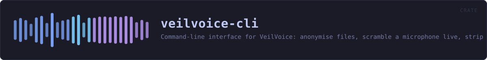

veilvoice-cli
Command-line interface for VeilVoice: anonymise files, scramble a microphone live, strip metadata, encrypt recordings.
reference · the same page on GitHub
veilvoice — the command-line interface.
Everything VeilVoice does, available without a desktop: it runs over SSH, in a container, and on machines that have no GUI toolkit at all. The same engine backs both this and the graphical app.
What is here
Twenty subcommands, and they divide into five groups:
- Audio --
anonymisea file,livescramble a microphone, listdevices,conversationfor a recording with several people in it. - Privacy of the files themselves --
cleanmetadata,encrypt,decrypt,keygen,shred. - Watching the machine --
watchthe microphone and camera,guardVeilVoice's own files against tampering,sentryfor canaries and how fast a folder is changing,capturefor which screen recorders are running. - The app lock --
lock set|status|change|remove, andpolicyfor settings somebody has fixed so the interface cannot turn them off. - Getting it onto the machine --
install,uninstall,companions, andguito open the desktop application.
That last group is a front end over veilvoice_setup, which the desktop application's setup tab also calls. The careful part -- editing PATH -- has one implementation and one set of tests, rather than one per front end.
Two behaviours that surprise people, on purpose
anonymise writes <out>.veil, not a bare WAV. Recordings are encrypted at rest by default. --encrypt=false opts out and requires --yes, because an unsealed recording is the thing somebody later wishes they had not produced. The wiki explains where the WAV went.
The front-ends refuse rather than downgrade. Asked to encrypt with nothing to encrypt with, this exits with an error instead of writing plain audio and mentioning it. Quiet degradation to a weaker posture is the defect class this project has found in itself most often.
Passphrase prompts cannot be piped
rpassword needs a real console; piping a passphrase in blocks on CONIN$ rather than reading it. That is a property of terminal input, not a bug here, and it means anything that prompts cannot be smoke-tested from a non-interactive shell. The layer beneath each prompt is therefore tested instead -- see crate::atrest and crate::lock, where the logic lives precisely so it can be reached without a terminal.
A clap ordering rule worth knowing
An argument declared beside #[command(subcommand)] must precede the subcommand on the command line unless it is marked global = true. So veilvoice lock --path X status parses and veilvoice lock status --path X does not, except that --path is now global specifically so both do.
In plain words
This is VeilVoice without a window.
Everything the program does, typed instead of clicked: disguise a recording, scramble a microphone while you talk, seal a file, strip a photograph's hidden labels, handle a recording with several people in it.
It is the same code underneath, so it works the same way -- over a remote connection, on a machine with no desktop, or from a script that runs it a thousand times.
HOW THE CRATE FITS TOGETHER
Every arrow is a crate:: or super:: path one module actually uses, read out of the source rather than drawn by hand.
The same graph as Mermaid source
%%{init: {"theme":"base","themeVariables":{"background":"#1a1b26","primaryColor":"#1f2335","primaryTextColor":"#c0caf5","primaryBorderColor":"#7aa2f7","secondaryColor":"#16161e","tertiaryColor":"#16161e","lineColor":"#737aa2","textColor":"#c0caf5","mainBkg":"#1f2335","nodeBorder":"#7aa2f7","clusterBkg":"#16161e","clusterBorder":"#2f3549","fontFamily":"ui-monospace, SFMono-Regular, Consolas, monospace","fontSize":"14px"}}}%%
flowchart TD
n_main(["main.rs<br/>2334 lines"])
n_accel["accel.rs<br/>90 lines"]
n_appctl["appctl.rs<br/>286 lines"]
n_atrest["atrest.rs<br/>286 lines"]
n_capture["capture.rs<br/>330 lines"]
n_conversation["conversation.rs<br/>797 lines"]
n_decoy["decoy.rs<br/>58 lines"]
n_failsafe["failsafe.rs<br/>112 lines"]
n_guard["guard.rs<br/>346 lines"]
n_gui["gui.rs<br/>247 lines"]
n_input["input.rs<br/>117 lines"]
n_lock["lock.rs<br/>248 lines"]
n_meter["meter.rs<br/>259 lines"]
n_policy["policy.rs<br/>243 lines"]
n_priv_mode["priv_mode.rs<br/>46 lines"]
n_sentry["sentry.rs<br/>384 lines"]
n_theme["theme.rs<br/>144 lines"]
n_accel --> n_sentry
n_accel --> n_theme
n_appctl --> n_sentry
n_appctl --> n_theme
n_atrest --> n_theme
n_capture --> n_policy
n_capture --> n_sentry
n_capture --> n_theme
n_conversation --> n_sentry
n_conversation --> n_theme
n_decoy --> n_sentry
n_decoy --> n_theme
n_failsafe --> n_sentry
n_failsafe --> n_theme
n_guard --> n_atrest
n_guard --> n_lock
n_guard --> n_theme
n_gui --> n_theme
n_input --> n_sentry
n_input --> n_theme
n_lock --> n_atrest
n_lock --> n_theme
n_meter --> n_theme
n_policy --> n_atrest
n_policy --> n_sentry
n_policy --> n_theme
n_priv_mode --> n_sentry
n_priv_mode --> n_theme
n_sentry --> n_theme
click n_main href "https://github.com/tilas01/veilvoice/blob/main/crates/veilvoice-cli/src/main.rs" "open the source"
click n_accel href "https://github.com/tilas01/veilvoice/blob/main/crates/veilvoice-cli/src/accel.rs" "open the source"
click n_appctl href "https://github.com/tilas01/veilvoice/blob/main/crates/veilvoice-cli/src/appctl.rs" "open the source"
click n_atrest href "https://github.com/tilas01/veilvoice/blob/main/crates/veilvoice-cli/src/atrest.rs" "open the source"
click n_capture href "https://github.com/tilas01/veilvoice/blob/main/crates/veilvoice-cli/src/capture.rs" "open the source"
click n_conversation href "https://github.com/tilas01/veilvoice/blob/main/crates/veilvoice-cli/src/conversation.rs" "open the source"
click n_decoy href "https://github.com/tilas01/veilvoice/blob/main/crates/veilvoice-cli/src/decoy.rs" "open the source"
click n_failsafe href "https://github.com/tilas01/veilvoice/blob/main/crates/veilvoice-cli/src/failsafe.rs" "open the source"
click n_guard href "https://github.com/tilas01/veilvoice/blob/main/crates/veilvoice-cli/src/guard.rs" "open the source"
click n_gui href "https://github.com/tilas01/veilvoice/blob/main/crates/veilvoice-cli/src/gui.rs" "open the source"
click n_input href "https://github.com/tilas01/veilvoice/blob/main/crates/veilvoice-cli/src/input.rs" "open the source"
click n_lock href "https://github.com/tilas01/veilvoice/blob/main/crates/veilvoice-cli/src/lock.rs" "open the source"
click n_meter href "https://github.com/tilas01/veilvoice/blob/main/crates/veilvoice-cli/src/meter.rs" "open the source"
click n_policy href "https://github.com/tilas01/veilvoice/blob/main/crates/veilvoice-cli/src/policy.rs" "open the source"
click n_priv_mode href "https://github.com/tilas01/veilvoice/blob/main/crates/veilvoice-cli/src/priv_mode.rs" "open the source"
click n_sentry href "https://github.com/tilas01/veilvoice/blob/main/crates/veilvoice-cli/src/sentry.rs" "open the source"
click n_theme href "https://github.com/tilas01/veilvoice/blob/main/crates/veilvoice-cli/src/theme.rs" "open the source"This site loads no third-party script, so it cannot run Mermaid; the diagram above is the same nodes and edges drawn by the generator instead. GitHub renders the source below directly.
THE FILES
| File | Lines | What it is |
|---|---|---|
accel.rs | 90 | veilvoice accel — the graphics hardware here, and what it is good for. |
appctl.rs | 286 | veilvoice appctl — learn what normally runs, then notice what does not. |
atrest.rs | 286 | Encryption at rest for the recordings VeilVoice writes, and the passphrase prompts that feed it. |
capture.rs | 330 | veilvoice capture -- which screen recorders are running, and which of them you have said you meant to run. |
conversation.rs | 797 | veilvoice conversation -- several speakers, a voice each, and subtitles. |
decoy.rs | 58 | veilvoice decoy — what a second passphrase is worth, and what it is not. |
failsafe.rs | 112 | veilvoice failsafe — the safety catch, and what it can and cannot do. |
guard.rs | 346 | veilvoice guard -- record what VeilVoice's files should be, and check them. |
gui.rs | 247 | veilvoice gui — open the desktop application from the command line. |
input.rs | 117 | veilvoice input — what running programs can see your keyboard and mouse. |
lock.rs | 248 | veilvoice lock — manage the application lock from the command line. |
main.rs | 2334 | veilvoice — the command-line interface. |
meter.rs | 259 | Level meters for veilvoice live, on a scale that means something. |
policy.rs | 243 | veilvoice policy -- settings that can only be tightened. |
priv_mode.rs | 46 | veilvoice privilege — what VeilVoice is running with, and what it can see. |
sentry.rs | 384 | veilvoice sentry -- canaries, baselines, and what changed since. |
theme.rs | 144 | Tokyo Night colouring for the terminal. |